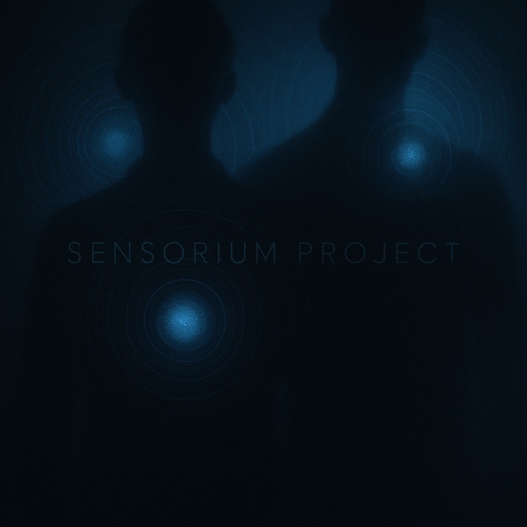

Auntie
When I was seven, there was a day after dinner when the world felt like it belonged to children and small animals.
ReadEssays & Reflections
Essays on dance, technology, embodied knowledge, and the politics of movement.

When I was seven, there was a day after dinner when the world felt like it belonged to children and small animals.
Read
Notes from Asylum Time, and How The Ten Poem Project Became a Book and an Award-Winning Short Film.
Read
Naming a Living Practice When the Names Are Already Taken.
ReadWhen I was seven, there was a day after dinner when the world felt like it belonged to children and small animals. That evening I was still outside, playing at the playground, listening the way you listen when you are young and everything is new. Frogs had started their mating rituals, their calls rising and falling like a conversation you do not need to understand to feel. Crickets chirped in the distance. Nearby, other children played and sang moonlight songs, their voices drifting through the air as if the night itself was singing back.
Then my auntie called my name.
I found her in the kitchen, putting dishes away. She had the kind of tired focus adults get when they are finishing the last task of the day. But when she turned to me, her face changed. She looked frightened, the way someone looks when they suddenly remember something they cannot undo.
She told me, endearingly, she had forgotten the church visitors' meal.
My auntie said it was late. She said no one else would go, because the path to the church was dark. It was a twenty-minute walk, and the road meandered through places where you could meet snakes, wild cats, bush dogs. The night was when they came out to play. It simply made the night come alive and more real.
There was another reason, too. Her foot was injured. She could not make a long trip. She looked at me like she was asking for something big without wanting to say the word big. She pleaded with me to take the meal. I remember the strange clarity of that moment. I understood what she needed. I understood why she was asking me. And I said yes with joy.
I took the meal in my hand and stepped out into the night. The moonlight was bright enough to draw clean edges around trees and roofs and the curves of the road. When you are seven, darkness sometimes is a kind of privacy and a kind of freedom I cannot now put to words as I think of this wholesome night. The night felt quiet in a way that made every sound clearer than ever: the frogs, the insects, the soft movement of leaves. It was as if I had stepped into nature's own abode. As if nature was awake and watching, and I was walking through its most vulnerable place.
I have always been drawn to animals, and I felt they were drawn to me. Even then I had the feeling that most of them knew me by name. I could not explain it, only felt it. The night felt populated, alive with hidden eyes and listening bodies. I liked that. I liked being in the world like that, not loud, but deeply present as if I am one with nature.
Maybe my voice was my lantern. Maybe the sound was my way of telling the night: I am here, I am not hiding, I am moving through.
So I walked with the meal in one hand and made myself a small parade. I sang. I danced. I pranced down the road the way only a child can, as if movement itself could hold courage. In truth, I was a little scared, but not of the animals. The animals made sense to me. What frightened me was the possibility of people, seeable or unseen, human beings who could be lurking in the dark with intentions you could not read.
Maybe that is why I sang so loudly. Maybe my voice was my lantern. Maybe the sound was my way of telling the night: I am here, I am not hiding, I am moving through. As my mind's voice shivers with fear. I kept walking until the church came into view. The visitors were there, and when they saw me, their faces opened like doors. They were excited to see a child arriving alone at night, and even more excited when they realized I had brought the meals. I remember their genuine gratitude. The kind that makes you feel useful in the world. The kind that makes you feel trusted.
I stayed only long enough to deliver what I carried. And then I turned back.
On the way there I had walked. On the way back I ran. I ran because I was suddenly aware again of the darkness, of the distance, of the possibility of other humans out there. I ran as if the night could change its mind. I ran as if my feet could erase the space between danger and home. I ran until I felt the familiar air of my neighborhood again, until the shapes around me were not strangers.
Years have passed, but that walk has stayed. The experience of it remained with me. I can still smell the bushes, hear the quiet night and my little feet running through the shrubs. The feeling of it has stayed: being small and alone and carrying something that mattered, moving through darkness that was both peaceful and risky, hearing the world breathe around me, finding freedom inside fear.
I think about that night now, living far away from where I began. There are days when my life feels like that road: dark, quiet, meandering. Living alone in the US makes me feel this way. A little scared of the dark, taking brisk walks, being scared of human beings, and running home. I have always thought about this as a metaphor, but no, a foreign land can feel like a long walk you did not fully choose, a place where you must keep moving even when no one else is willing to go with you. There is solitude in it. There is also beauty. There is a strange kind of peace that comes from learning how to walk through the dark without begging it to become daylight.
Sometimes I feel alone. Sometimes I feel afraid. But I also feel a freedom that I recognize. The night, the moonlight, the song I used to keep myself brave, the sense of animals listening, the careful joy of being trusted with something important, and making it there anyway, all of that lives in me. That one walk in the dark, with a meal in my hand and my voice in the air, is a sweet memory and it is a map with which I trace the fading memories my body holds.
Notes from Asylum Time, and How The Ten Poem Project Became a Book and an Award-Winning Short Film
This article is about refusal as a research method.
I have been doing house cleaning lately, and when I clean I think a lot about my past, my life in Nigeria, and the conditions that pushed me into migration. Today, my life is great. It has turned out better than I expected. I came to the U.S. to study, and during that time I found out that I could not return home. The Nigerian government passed laws to criminalize people of the LGBTQIA+ community. I was terrified. I applied for asylum to remain in the U.S. This decision came out of the necessity to survive.
The assimilation process has been difficult. I have been through a lot. I have been abused. I have been relegated to the margins. And with that has come a rebirth of myself. A new person.
In this article, I resist the urge to tell another immigrant story of look where I came from and look where I am now. That is not how I am feeling. I am still feeling the bitterness and hurt from a lifetime of abuse, physical and mental manipulations that have caused a lot of violence in my life. These pains have been the only way that I know myself and who I have become. Leaving any of that behind and pretending to be a new man sounds like hypocrisy to me. I do not feel like a new man, and I do not forget what was done to me.
I am grateful for all that I have and have become. Yes. But I am refusing to tell my story for extraction, to entertain people and make others feel good about themselves, or to convince them that the conditions made me better. I am here today in spite of all that has happened to me.
What follows is the account of why refusal became necessary, what it produced, and what it is still producing.
The concept of refusal I work with comes from scholars who have thought carefully about visibility, legibility, and what it costs to be seen on someone else's terms.
Audra Simpson writes about refusal as a political stance — rejecting the terms of recognition offered by dominant structures. She calls it "ethnographic refusal," a way of acknowledging the power imbalance in who gets to write about whose life, and choosing not to write in ways that compromise safety or sovereignty.
Édouard Glissant demands the "right to opacity." He argues that opacity is not hiding. It is not enclosure. It is the right to remain partially unknowable, to refuse full transparency. This right to not be fully consumed is central to how I work.
Tina Campt listens for "quotidian practices of refusal" in photographs of Black diasporic subjects. She hears a quiet intensity in those images — a low hum of resistance. Her attention to how the body holds and transmits knowledge that resists extraction informs everything I do.
Saidiya Hartman asks how to tell a story about lives marked by violence without committing more violence in the telling. She practices what she calls "narrative restraint" — the refusal to fill in the gaps, to provide closure, to make the archive yield more than it actually holds.
These thinkers gave me language for something I was already doing. I did not learn refusal from books. I learned it from twelve years of waiting.
I wrote an early version of this on October 29, 2024, one week before the U.S. general election.
Some people treat an election like an argument. Something you debate, win or lose, then move on. For me, an election can feel like weather. It does not have to touch you directly to change how you sleep. You start checking the windows. You start planning for the kind of day you might wake up into.
In 2016, when Donald Trump took office, I had applied for asylum about five months earlier. I still had the hope that many people have when they first enter a system. You think an application is a beginning. You think a beginning leads to a middle, then an end. You think time moves forward like that.
A friend messaged me on Facebook asking if Trump's new law affected me. I contacted my lawyers in Washington, D.C. They told me I might not be directly impacted, but delays were likely.
That one word — likely — became a structure. A roof. A room. Something you live under.
For years, I renewed my employment authorization carefully. I was terrified of making a mistake that could cost me everything. I paid taxes. I worked. I taught. I built a career. I made art. I did all the things that look like life from the outside.
Inside, I lived in a kind of confinement that is hard to explain without people trying to clean it up. You cannot vote, and you learn to keep your opinions quiet. You do not want attention. You do not want the wrong kind of visibility. You do not want to be misunderstood by a system that already treats you like a file number. You learn to be careful in a way that enters your body.
Waiting is not neutral. Waiting changes a person.
What matters here is not the events. It is what the events did to my nervous system. My body accumulated trauma. I fell in and out of depressions. I became lonely in a way that was not just social. It was institutional. I began to feel that nobody was coming. I began to fear that I would die in darkness.
Prolonged uncertainty can make the future feel like a disappearing concept. Calls from home became complicated. Sometimes I could not access joy even when I wanted it. I felt suspicious, and I hated that I felt suspicious. I started noticing how easily an immigrant is expected to perform gratitude as payment for protection.
That is where refusal begins for me.
Refusal begins as a boundary you build when you realize that your life keeps getting converted into something else for other people.
I refuse to turn my life into public comfort. I refuse to flatten my story into a clean arc that makes the reader feel safe. I refuse to write my pain as entertainment. I refuse to write my survival as an inspirational package. I refuse to become evidence on demand. I refuse to perform gratitude as if gratitude is the price of being allowed to live.
Refusal does not mean I am silent or ungrateful. It means I choose the terms of the record.
Refusal is how I stay human inside a system that can reduce you to paperwork. Refusal is also how the art becomes research.
The moment you are an immigrant, people feel entitled to your explanation. They want to know where you are from, what happened to you, how bad it was, how you escaped, how you healed. They want the before and after. They want the transformation. They want closure.
Asylum time is not shaped like closure. It is shaped like repetition, delay, relapse, panic, calm, then panic again. Some days you feel safe and grateful. Some days you feel like a ghost. Some days you feel like a tree that has survived too many seasons and is not sure it has more seasons left.
This refusal is the only way I know to record this without being taken from myself.
I have told my story many times to whoever was interested in listening. Every time I tell my stories, I feel emptier than before.
Within my struggle in assimilating into society, feeling deeply depressed, angry and lost, telling my story meant I would deal with anxiety for the rest of the month, even years. Asking myself: Did they like what I was saying? Did I suck all the air out of the room by taking up time to talk non-stop? For months I would continue to beat myself up.
Then I stumbled on the word "extraction." Something I never thought was a thing. But here I was, living a life that simply entertained people, angered people, or gave them perceptions of me that were more mirage than anything else.
Extraction is what happens when people take your lived experience and do not take responsibility for the cost of it.
Your pain becomes useful to someone else. You do not become safer. A story is demanded from you, then consumed, then left behind. The immigrant is asked to be legible, clean, and teachable.
It is a strange thing to live through trauma and then be asked to summarize it neatly. A clean summary can become a lie. The events may be true, but the shape is false.
I use refusal to interrupt that transaction.
I decided to remain in the U.S. on asylum because of my sexuality. I did not come thinking I would stay permanently. I came for education. Then the Nigerian government criminalized gay people, and my life pivoted abruptly.
I had to decide what it meant to survive.
I used to believe my sexuality was minimal, like it was something I could keep quiet and therefore be safe. But legality does not care how quietly you live. Once criminalization becomes law, the world reorganizes itself around danger. Your body begins to behave like danger is everywhere — and rightfully so, given the Nigerian environment I had grown up in.
That shift did not remain in paperwork. It entered my mind, my mood, my relationships. I became mentally depressed. Angry at small irritations. I lashed out at people who cared about me. I lost friendships in the early years because I did not know how to carry what I was carrying.
Over time, I struggled to keep relationships, to make lasting connections, to access help in the ways people talk about as if help is always accessible. I began to believe there was no one coming. That belief is its own kind of injury.
Life as an immigrant is tough. Life as a lonely immigrant is on another level.
So I became an artist in the way some people become religious. It was the only place I could still be whole.
Art is where I make sense of the world around me. Art is how I survive this world. My art is not a trophy. It is not phenomenal for people's gaze. It is not for approval. It is like a tree in a forest. It goes through seasons. It survives winter. It survives fire. One day it will fall. All I ask is that my roots run deep enough to hold me until due course, until something new can grow.
This is the emotional ground of The Ten Poem Project.
The short film and the forthcoming book contain poems from my migrational journey.
I use the word journey to mean the ways I have migrated across space and time. Journey here does not mean to literally travel, even when that happens within this context. Here, it means internal migration — how the self moves across fear, suspicion, gratitude, rage, tenderness, numbness, and the rare moments when the body briefly believes it might be safe.
To regain a sense of place and to retain my sense of self, I defaulted to an old practice of writing poetry, which I adopted early on. Finding myself locked in this immigration cul-de-sac, I began to write poems.
The poems are not written in a tidy sequence because my life was not experienced in a tidy sequence. Some days felt like progress. Some days felt like regression. Some days felt like returning to the same room with different lighting.
That is why the structure is unstable. That instability is not a failure of craft. It is accuracy.
Refusal is the reason the poems do not behave like chapters in a conventional memoir. If I forced them into linearity, the work would become easier to consume. It would also become easier to misunderstand. Refusal makes the poems stay close to the truth of asylum time.
When I say living archive, I mean something simple: a record of conditions, not just events. A record of what prolonged waiting does to the body. A record of how memory reorganizes itself under stress. A record of how fear returns. A record of how hope flickers. A record of how a person becomes suspicious of joy. A record of how love becomes complicated.
The poems hold this kind of record. They do not only tell what happened. They hold what it felt like to live through it.
That is why I call this work research. I built a method for recording reality without betraying the person inside it.
The Ten Poem Project is accompanied by a short dance film: Rooted in Motion.
The work took shape over a decade of living in the United States with an asylum case pending. During those years, I wrote poems, recorded audio notes, and kept private observations as I moved through migration, queer survival, displacement, and the long work of learning how to live inside a new society.
The film is not based on the poems in a simple way. It runs alongside them. It is another way of recording.
My dance training ranges from Nigerian traditional dance to ballroom and Latin social dance to contemporary African dance. The movement in the film is culled from these lineages. The point is not to display culture. The point is to show what it looks like when a body is carrying too much, and still moving.
As poetry took hold of me and helped me create a safe space, I began to develop my writing into abstraction. It was a way for me to get away from the murky and stuffy room that I had been confined in for so long. If I abstract my experiences, I thought, I would better understand them as something distant and far from me.
But abstraction is not me trying to be mysterious. Abstraction is protection and precision at the same time. Sometimes direct explanation is unsafe. Sometimes it is extractable. Sometimes it forces you to perform your pain clearly so that another person can feel moved by it.
Abstraction lets me speak without being taken. It lets the work hold the truth without turning me into a public exhibit.
Rooted in Motion: The Ten Poem Project received the Canada Shorts Film Festival Grand Prize 2025, along with Best Documentary, Best International Short, Best Experimental Film, Best Director, Best Cinematography, and Best Score.
The film has also been selected to screen at the LGBTQ+ Toronto & Los Angeles Film Festival, SHORT to the Point (Dance Film Category), and Versatility Dance Festival. It received an Honorable Mention at the ATX Short Film Showcase.
My migration is not only legal. It is also artistic.
Before the U.S., dance was already survival for me. I trained myself while training others. I taught children during the day, rehearsed at night, and lived inside exhaustion. I tried to build a company with limited resources. I learned what it means to dream while broke. I learned what it means to be seen as a failure while you are doing everything you can to live.
I helped choreograph a major Nigerian dance film. That success brought pressure, and pressure brought collapse. Collapse brought the question that returns again and again in the immigrant body: what do I do now, and where do I go now.
I pursued an MFA in the U.S. after being told I was not brilliant enough to be admitted anywhere abroad. I was admitted, with support, and that moment did not solve my life — but it opened a door.
In the U.S., I created works that were not just performances. They were records:
These are not random titles in a CV. They are milestones in how my body learned to speak under pressure.
The Ten Poem Project emerges from this longer reality. It is dance, language, memory, and survival braided together.
The significance of the film is that it turns a life condition into an authored method.
A decade of asylum-pending life is usually treated as background, or reduced to trauma material. Here, it becomes structured practice: poems, audio logs, movement scores, screenplay drafts, and a film language that can hold time, uncertainty, waiting, and adaptation without flattening any of it.
The film shows how writing becomes movement, and how movement becomes evidence. The edit is treated like choreography. The camera is treated like a collaborator.
It is a record of queer migrant survival that refuses simplification. The project holds complexity: joy and fear, belonging and estrangement, intimacy and public risk.
It does not ask for pity. It makes form, and that is power.
This article is not meant to summarize my life. It is meant to name the method that has been holding the work together.
Refusal is that method.
Refusal is how I keep the record without being extracted. Refusal is how I protect the inner life of the immigrant, the artist, the gay body, the asylum body, from being converted into something easy. Refusal is also what finally gives me a structure for the book.
If refusal is the spine, then each part of the book can be designed as a boundary. A human boundary.
The book will move through asylum time as a condition. It will hold the ten poems alongside short narratives about when each was written, what triggered it, what time of day it arrived, what it felt like in the body. It will document how Rooted in Motion holds what language cannot hold. It will trace the earlier works, the Nigerian company years, the U.S. training, the performances, the teaching, and the moments where dance kept me alive.
And it will turn toward the research horizon: why dance matters beyond performance, why movement deserves serious preservation, and why I believe a world that takes dance seriously can rethink politics, culture, religion, science and technology.
That last part is not a sudden pivot. It is the continuation of the same refusal.
The absence of African dance in global archives is also an extraction problem. The repeated demand for legible immigrant narratives is also an archive problem. The body is not just a body. It is a knowing system.
I am writing this book to keep that knowledge intact.
Naming a Living Practice When the Names Are Already Taken
There is a practice I have been developing for years, and it did not have a name until recently. I called it different things at different times: West African technique, African contemporary, polyrhythmic training, embodied research. None of those names were wrong, but none of them were exactly right either. They either pointed to geography without accounting for method, or they emphasized method without acknowledging the cultural ground. What I needed was a name that could hold both.
That name is Confluence Dance Technique.
The word confluence comes from hydrology. It refers to the point where two or more rivers meet and continue as one body. In West Africa, confluences are not just geographic features. They are cultural sites—places where trade routes intersect, where languages blend, where ritual and commerce coexist. The Niger-Benue Confluence, for example, is one of the most significant in the region. Rivers that begin in different highlands, carry different sediments, and move at different speeds come together there and become something else without losing what they were.
That image shapes the technique.
The body that dances inside this technique is not choosing between traditions. It is standing at a confluence and learning how to move with more than one current at once.
Confluence Dance Technique is a rigorous training practice for dancers living inside shifting vocabularies and shifting definitions of legitimacy. It treats dance as steps and as intelligence—developing multirhythmic skill, repertoire fluency, and cultural responsibility through embodied research. The goal is not fusion. The goal is the capacity to hold complexity: to know the difference between sources, to move between them with precision, and to remain accountable to the histories those movements carry.
The technique trains three primary capacities: multirhythmic coordination, repertoire fluency, and cultural positioning.
Multirhythmic coordination refers to the ability to move different parts of the body according to different time signatures simultaneously. West African dance forms often involve polyrhythmic structures where the feet, hips, arms, and head are each responding to distinct layers of percussion. The technique trains this through isolation exercises, polyrhythmic phrases, and improvisation tasks that require the dancer to hold multiple rhythmic identities at once.
Repertoire fluency means the ability to move through a range of established vocabularies—not as a tourist, but as a practitioner who understands the internal logic of each form. This includes dances from Nigeria, Ghana, Guinea, Senegal, and the broader West African region, as well as diaspora forms in the Caribbean, Brazil, and the United States. The technique does not treat these as interchangeable. It teaches their differences as clearly as their overlaps.
Cultural positioning addresses the question of authority. Who has the right to teach a dance? Who has the right to perform it? Who has the right to transform it? The technique does not offer simple answers, but it does insist that these questions cannot be avoided. It trains dancers to locate themselves in relation to the forms they practice—not as gatekeepers, but as stewards who understand what they carry and what they owe.
Names are not neutral. The history of African dance in Western institutions is a history of naming problems. Dances were called "ethnic" or "folk" or "traditional"—terms that positioned them as the opposite of technique, as raw material rather than refined method. When those dances were brought into concert settings, they were often renamed or recategorized in ways that erased their origins. When they were taught in universities, they were often housed in departments of anthropology or ethnomusicology rather than departments of dance.
Confluence Dance Technique is a deliberate counter-naming. It asserts that what happens in this practice is technique—not in spite of its African sources, but because of them. It asserts that the confluence model is not a dilution but a method: a way of training the body to hold multiple systems of knowledge without collapsing them into one.
The name also signals a relationship to place. Confluence is not an abstraction. It is a specific geographic and cultural phenomenon in the region where many of these dances originate. To name the technique after that phenomenon is to keep the land in the conversation, even when the practice travels.
Confluence Dance Technique is one output of a larger research project called Global Movement Research. That project is concerned with the question of how dance can be archived, transmitted, and studied without being extracted—without turning living practices into dead data. The technique is the embodied arm of that research. It is where theory meets the floor.
In the GMR framework, dance is treated as a form of knowledge that resists certain kinds of capture. A video of a dance is not the same as the dance. A notation score is not the same as the movement. Even a live performance is not the same as the practice that makes the performance possible. The technique is designed to transmit something that cannot be fully captured: the logic of the body that knows how to do this, and why.
This means the technique is not just a set of exercises. It is a pedagogy—a way of teaching that attends to context, history, and responsibility as much as it attends to coordination and stamina. It is also a research method—a way of investigating questions about rhythm, culture, and embodiment through the practice of moving, not just through the analysis of movement.
Naming is not the end of the work. It is the beginning of a different kind of work: clarifying what the name points to, testing it in practice, and revising it when necessary.
One thing I am still working through is the relationship between Confluence Dance Technique and the specific dances that inform it. The technique draws from Bata, Atilogwu, Adowa, Kpanlogo, Yankadi, Sabar, and many others. But it is not a substitute for those dances. It is a framework for learning them, comparing them, and understanding how they relate. The challenge is to honor that distinction without turning the technique into something abstract—a system that floats above its sources rather than staying rooted in them.
Another thing I am still working through is the question of who should teach it. I developed this technique out of my own training, my own research, and my own teaching practice. But the dances it draws from do not belong to me. They belong to communities, lineages, and traditions that have their own protocols for transmission. The technique tries to stay accountable to those protocols, but accountability is not a one-time decision. It is an ongoing negotiation.
That negotiation is part of the work. It is not a problem to be solved. It is a condition to be inhabited.
Confluence Dance Technique is not a finished product. It is a living practice, and like all living practices, it will change over time. The name gives it a shape. The work gives it a body. The ongoing conversation—with students, with colleagues, with communities—gives it direction.
What I can say now is this: the technique exists, it has a name, and it does something. It trains dancers to move with precision and complexity. It trains them to hold more than one rhythm, more than one source, more than one history at once. It trains them to ask hard questions about authority and responsibility. And it does all of this through the body—through sweat, through repetition, through the slow accumulation of skill that cannot be faked.
That is what technique means. That is what confluence means. That is where I am standing.